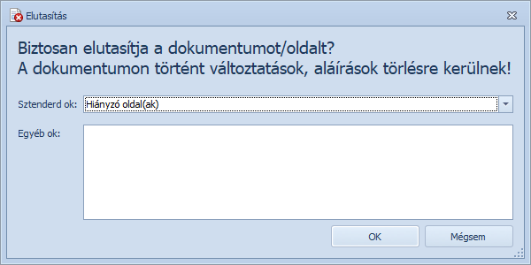

Amennyiben a kötegben olyan iratot találunk, melyet jelenlegi formájában nem lehet hitelesíteni, akkor a dokumentumot el kell utasítani, melyet a dokumentum elutasítása ablakban lehet megtenni.

Dokumentum elutasítása ablak
Az ablakban opcionálisan megadható az elutasítás oka. Az okot kétféleképpen adhatjuk meg:
Figyelem! Elutasítást követően a dokumentumon tett aláírások és változások (oldalak forgatása, törlése) visszavonásra kerülnek!